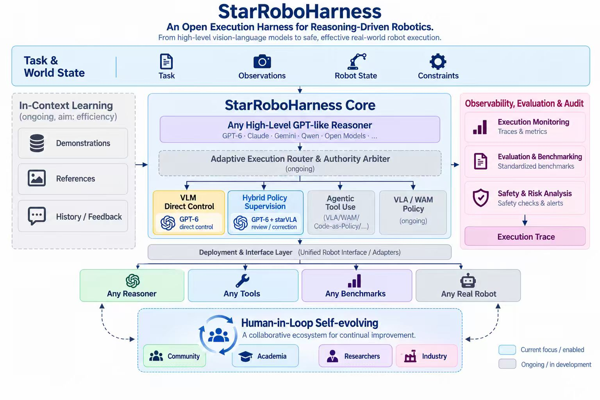

starRoboHarness
An Open Execution Harness for Reasoning-Driven Robotics.
TL;DRstarRoboHarness keeps proposal generation, review, safety checks, and execution separate. At each fresh observation boundary, a reasoner may review the policy's next action chunk, but bounded correction is allowed only when visible evidence shows a failure or a misaligned next intent.
Auditable reasoning on top of an existing robot policy
starRoboHarness is a small, model- and benchmark-neutral control layer that connects multimodal reasoners to robot policies without giving the reasoner unrestricted control. It separates proposal generation, evidence-based review, safety validation, execution, and trace collection at every fresh observation boundary.
Our first integration combines StarVLA's QwenPI_v3 policy with GPT 6 Astra and compares the hybrid controller with robot-policy baselines and direct reasoner control on ten RoboDojo tasks. In the supplied result summary, StarVLA + GPT 6 Astra reaches an overall score of 62.6 and an overall success rate of 48.00%, compared with 24.72 and 17.60% for StarVLA alone.
Keywords: vision-language-action models · multimodal reasoning · hybrid control · robot manipulation · auditable evaluation

Use strong reasoning where it matters most
Robot policies produce fast, continuous action sequences, while multimodal reasoners can inspect visible failures, challenge a policy's next intent, and plan short recoveries. The central question is how to combine those strengths without turning uncertainty into uncontrolled intervention.
starRoboHarness treats the learned policy as the default controller. A reasoner observes the same public evidence, reviews the previous execution and the next proposal, and receives authority only through explicit gates. The design keeps benchmark instructions and native outcomes intact while making policy families, reasoners, robots, and simulators replaceable behind adapters.
Protocol first
Protocols stay stable while policies, reasoners, robots, and benchmarks remain replaceable.
Evidence gated
Uncertainty alone never authorizes takeover. Every correction must cite observable evidence.
Bounded control
A student prefix uses at most 15 steps; a local correction uses at most five before observing again.
Trace everything
Proposals, decisions, actual acknowledgements, native outcomes, versions, cost, and latency are recorded.
The policy executes fluently; the reasoner intervenes selectively
Every control cycle starts from the benchmark's original instruction and an exact observation. StarVLA/QwenPI_v3 proposes an action chunk. The reasoner separately assesses the previous execution and the visible intent of the next proposal, then either passes the policy proposal or requests a bounded end-effector correction.
The first policy contract uses three ordered RGB views, the raw 14D dual-ARX-X5 joint state, and continuous gripper opening with 0 = closed and 1 = open. QwenPI_v3 predicts 50 absolute joint-position actions; starRoboHarness executes only a bounded prefix before replanning.
Replace adapters, not the control system
StarVLA, OpenPI, RoboDojo, Isaac Sim, and provider SDKs remain outside the lightweight core package.
Ten-task RoboDojo comparison
The tables compare six robot-policy baselines, the StarVLA + GPT 6 Astra hybrid, and GPT 6 Astra under direct control. Higher values are better for both native task score and success rate.
StarVLA + GPT 6 Astra
StarVLA + GPT 6 Astra
points over StarVLA
over StarVLA
Task score
Scroll horizontally to compare all methods.
| Task | DM0.5 | GalaxeaVLA (G0.5) | Xiaomi- Robotics-1 | OpenWAM-α | π₀.₅ | StarVLA | StarVLA + GPT 6 Astra | GPT 6 Astra (direct) |
|---|---|---|---|---|---|---|---|---|
| Organize the table | 44 | 46.33 | 57.67 | 62.5 | 23.33 | 26 | 62.5 | 30 |
| Classify by language | 0.47 | 1.07 | 2 | 1.33 | 0.6 | 0.2 | 38 | 60 |
| Imitate a sorting sequence | 1.8 | 1.67 | 2.5 | 2.9 | 1.6 | 0.6 | 53 | 0 |
| Arrange the largest number | 7.85 | 4.11 | 8.56 | 4.36 | 2.29 | 8 | 57.5 | 57 |
| Pack objects into a box | 14.72 | 17.12 | 18.69 | 20.83 | 18.36 | 12 | 50 | 50 |
| Classify objects | 26.83 | 10.33 | 17.2 | 5.53 | 24.67 | 6.7 | 71 | 100 |
| Build a tower | 55.2 | 82.93 | 52.6 | 52.53 | 37.73 | 70.6 | 64 | 12 |
| Make a Kong in Mahjong | 56.67 | 90 | 41.33 | 32 | 26.67 | 16 | 40 | 0 |
| Fold clothes | 28.96 | 32.75 | 41.49 | 51.31 | 29.12 | 39.2 | 100 | 40 |
| Put bottles in a bin | 81.7 | 96.3 | 97.7 | 94.03 | 79.93 | 67.9 | 100 | 36 |
| Overall | 31.82 | 38.26 | 33.97 | 32.73 | 24.43 | 24.72 | 62.6 | 37.81 |
Task success rate
Native success percentage; higher is better.
| Task | DM0.5 | GalaxeaVLA (G0.5) | Xiaomi- Robotics-1 | OpenWAM-α | π₀.₅ | StarVLA | StarVLA + GPT 6 Astra | GPT 6 Astra (direct) |
|---|---|---|---|---|---|---|---|---|
| Organize the table | 4.00% | 11.33% | 14.67% | 13.33% | 0.00% | 4.00% | 0.00% | 0.00% |
| Classify by language | 0.00% | 0.00% | 0.67% | 0.00% | 0.00% | 0.00% | 20.00% | 40.00% |
| Imitate a sorting sequence | 0.00% | 0.00% | 0.67% | 0.67% | 0.00% | 0.00% | 40.00% | 0.00% |
| Arrange the largest number | 3.20% | 0.53% | 3.73% | 0.53% | 0.53% | 4.00% | 50.00% | 40.00% |
| Pack objects into a box | 1.33% | 2.93% | 2.40% | 3.73% | 2.40% | 4.00% | 20.00% | 20.00% |
| Classify objects | 16.67% | 4.00% | 8.67% | 1.33% | 12.67% | 0.00% | 60.00% | 100.00% |
| Build a tower | 42.00% | 78.67% | 47.33% | 38.67% | 24.00% | 62.00% | 60.00% | 0.00% |
| Make a Kong in Mahjong | 56.67% | 90.00% | 41.33% | 32.00% | 26.67% | 16.00% | 40.00% | 0.00% |
| Fold clothes | 24.53% | 28.00% | 38.93% | 49.07% | 21.07% | 32.00% | 100.00% | 40.00% |
| Put bottles in a bin | 72.00% | 94.00% | 96.67% | 91.33% | 69.33% | 54.00% | 100.00% | 20.00% |
| Overall | 22.04% | 30.95% | 25.51% | 23.07% | 15.67% | 17.60% | 48.00% | 26.00% |
Values are reproduced from the supplied result summary. Bold blue cells identify the hybrid method, not the best value in every individual row.
Watch each control mode
Each task has its own row. Choose StarVLA, StarVLA + GPT 6, or GPT 6 (direct) to load that control mode's replay. Episodes were selected by success first and native score second; direct GPT 6 data is not available yet.
Report quality, validity, and cost together
A valid comparison aligns task, layout, seed, instruction, action contract, and native termination. Success and score remain environment outcomes rather than model self-reports.
Use the environment's terminal receipt, never the model's own claim of success.
Compare methods case by case with task, layout, seed, and termination aligned.
Measure interventions made without sufficient evidence of failure or misalignment.
Measure whether the system regains progress after an observed execution failure.
Report total calls, input and output tokens, and cached-input usage.
Track end-to-end reasoner decision and student-policy latency separately.
Measure the share of executed control steps that came from reasoner corrections.
Report compute and infrastructure failures separately from model outcomes.
What the aggregate tables do not establish
The reported averages show task-level performance, but they do not by themselves identify which component caused an improvement. Reasoner quality, control cadence, rendering, policy stochasticity, and runtime conditions can all affect a rollout.
Protocol alignment
Baseline values should be compared only when task definitions, layouts, seeds, horizons, and success criteria are aligned.
Statistical coverage
Publication should state the number of valid episodes and uncertainty intervals for every method and task.
Efficiency
Score gains must be accompanied by calls, tokens, cache use, latency, wall time, and GPU-hours.
Evidence boundary
The reasoner must not receive hidden reward, object truth, future simulator state, or case-specific action scripts.
From trustworthy baselines to a transferable control layer
Reproduction
Freeze manifests and protocol boundaries for GPT-as-Policy and QwenPI_v3.
Core
Establish contracts, gates, traces, fake runtimes, and conformance tests.
Native QwenPI_v3
Demonstrate inference and action-path parity with the maintained StarVLA deployment.
Hybrid · quality · efficiency
Run hybrid smoke tests and isolated context/recovery ablations, then reduce calls, tokens, latency, and cost.
Generalization
Add a non-VLA policy and a second environment without adding platform constants to the core package.
The project succeeds when
Every intervention has evidence, and every improvement survives paired evaluation.
A new policy should require only a small adapter, while every result states its validity boundary, latency, and compute cost.